Lmbench 简介
Lmbench是个用于评价系统综合性能的多平台开源benchmark，能够测试包括文档读写、内存操作、进程创建销毁开销、网络等性能。
下载和安装
官网地址：http://www.bitmover.com/lmbench/
下载连接：lmbench-3.0
或者
链接：https://pan.baidu.com/s/1GJ7iOSTYQa4THAjjiD4TXQ
提取码：jayn
1 | imaginemiracle:Downloads$ unzip lmbench-3.0-a9.zip |
需要注意的是，目前解压出的 lmbench 中所有文件都不可被执行，当直接执行 make 编译后将会看到类似有 Permission denied 等一系列错误。
这里首先需要更改所有文件的权限：
1 | imaginemiracle:Downloads$ sudo chmod 777 -R lmbench-3.0-a9/ |
进入 lmbench 目录，其目录结构如下。
1 | imaginemiracle:Downloads$ cd lmbench-3.0-a9/ |
使用 Lmbench 测试
可能存在测试结果显示不全问题，需要修改getsummary 文件
vim scripts/getsummary
添加
1 | if (/^\[mount:/) { |
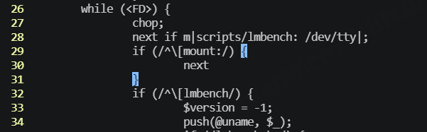
cp config.guess lmbench-3.0-a9/scripts/gnu-os 修正gnu-os参数，解决arm系统适配问题
config.guess文件网盘下载自带有
执行 make results，执行后将会有以下选项提示需要设置：
- MULTIPLE COPIES： 同时运行并行测试，对应生成结果中的
scal load项； - Job placement selection: 作业调度控制方法，默认选
1，表示允许作业调度； - Options to control job placement: 默认选
1； - Memory: 设置为大于
4倍的cache size，该值越大结果越精确，同时运行时间越长； - SUBSET: 要运行的子集，包含
ALL / HARWARE / OS / DEVELOPMENT，默认选all； - FASTMEM、SLOWFS、DISKS、REMOTE… 等选项，均保持默认即可。
- Mail results: 选
no。
设置完成后测试程序开始运行，需要注意运行时间较久，需耐心等待，或先做其他事情至少 10 min 后再看。
查看结果
执行 make see 查看运行结果，若只出现两行命令，显示运行结果输出到了 summary.out 文件中，则直接查看该文件即可。cat ./results/summary.out。
将会看到如下输出：
1 | make[1]: Entering directory '/home/tmp/lmbench-3.0-a9/results' |
系统基本信息
输出结果中开始显示系统的基本参数信息。
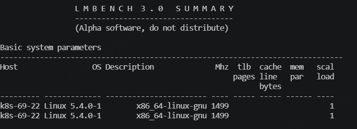
其中：
- tlb: 表示转换后备缓存的页面数；
- cache line bytes: 高速缓存行字节数
- mem par: 存储器分层并行化；
- scal load: 并行执行的
Lmbench数目。
处理器 Processor 性能
如下输出结果单位均为 us，数值越小表示性能越好。
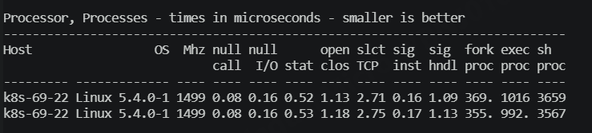
- null call: 执行
getppid需要的时间； - null I/O: 从
/dev/zero读取一个字节的时长t1，写一个字节到/dev/null的时长t2，t1、t2取平均值即为该项结果； - stat:
stat一个文件（即得到一个文件的信息）所需时长； - open clos:
open一个文件接着再close掉该文件一共所用时间（不包含读目录和节点的时间）； - slct TCP: 通过
TCP网络连接选择100个文件描述符所消耗的时间； - sig inst:
install signal所耗时长； - sig hndl:
handler signal所耗时长； - fork proc:
fork一个完全相同的process，并把原来的process关掉一共所消耗的时间； - exec proc: 模拟一个
shell进程的工作过程：fork一个新进程执行新命令消耗的时间。 - sh proc:
fork一个进程，同时询问系统shell来找到并运行一个新程序所用时间。
数学运算
如下输出结果单位均为 ns，数值越小表示性能越好。
(1) 整型计算
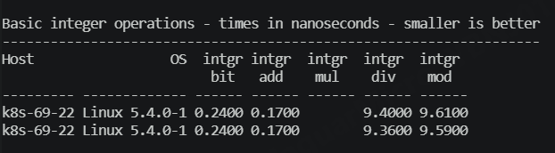
(2) 无符号整型计算
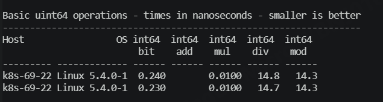
(3) 浮点型计算
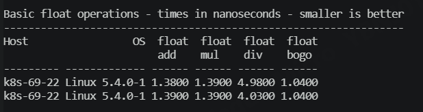
(4) 双精度浮点型计算
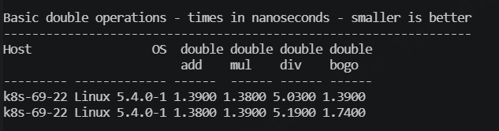
上下文切换
如下输出结果单位均为 us，数值越小表示性能越好。
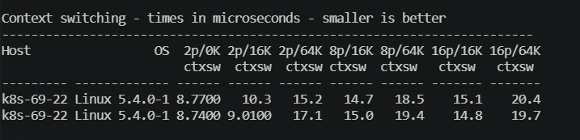
多个进程用 unix pipe 环连接起来，每个进程从自己的管道中读取 token，执行任务，然后将 token 写给下一个进程。
context swithing 时间包括：切换进程的时间，加上恢复进程所有状态所用的时间（包含恢复 cache 状态）。
- 2p/0k: 每个进程的
size为0（不执行任何任务），进程数为2时上下文切换所消耗的时间； - 2p/16k: 每个进程
size为16K（执行任务），进程数为2时上下文切换所消耗的时间；
之后的测试项以此类推。
本地通讯时延
如下输出结果单位均为 us，数值越小表示性能越好。
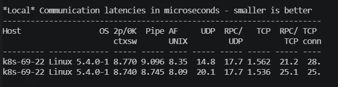
- 2p/0k: 每个进程的
size为0（不执行任何任务），进程数为2时上下文切换所消耗的时间； - Pipe: 即所谓的
hot potato测试，两个没有具体任务的进程之间使用pipe通信，一个token在两个进程间来回传递，传递一个来回所消耗时长的平均值； - AF UNIX: 同
Pipe测试项，但进程间通信使用的是socket通信； - UDP: 同
Pipe测试项，但进程间通信使用的是UDP/IP通信； - RPC/UDP: 同
Pipe测试项，但进程间通信使用的是sun RPC通信，默认情况下，RPC采用UDP协议传输； - TCP: 同
Pipe测试项，但进程间通信使用的是TCP/IP通信； - RPC/TCP: 同
Pipe测试项，但进程间通信使用的是sun RPC通信，指定RPC采用TCP协议传输； - TCP conn: 创建
socket描述符和建立连接所用时间。
文件、内存延时
如下输出结果单位均为 us，数值越小表示性能越好。
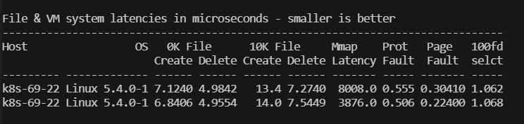
- 0K File Create:
0K文件创建所用时间； - 0K File Delete:
0K文件删除所用时间； - 10K File Create:
10K文件创建所用时间； - 10K File Delete:
10K文件删除所用时间； - Mmap Latency: 将指定文件的开头
n个字节mmap到内存，然后unmap，并记录每次mmap和unmap共消耗的时间，去每次消耗时间的最大值； - Port Fault: 保护页延时时间；
- Page Faule: 缺页延时时间；
- 100fd selct: 对
100个文件描述符配置select的时间。
本地通信带宽
如下输出结果单位均为 MB/s，数值越大表示性能越好。
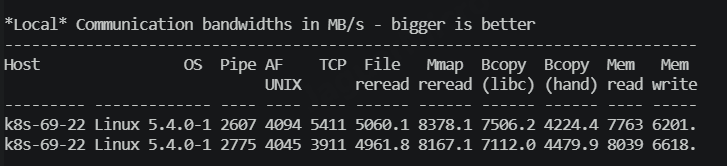
- Pipe: 在两个进程建立
pipe，pipe的每个chunk为64K，通过该管道移动50MB数据所消耗的时间； - AF UNIX: 两个进程之间建立
unix stream socket连接，每个chunk为64K，通过该socket传输10MB数据所用的时间； - TCP: 同
Pipe测试项，但进程间使用TCP/IP socket通信，传输数据量为3MB； - File reread: 读文件并将其汇总一起所用的时间；
- Mmap reread: 将文件
mmap到内存中，从内存中读文件并将其汇总一起所用时间； - Bcopy(libc):
do bw_mem $i bcopy，从指定内存区域拷贝指定数量的字节内容到另一个指定内存区域的速度； - Bcopy(hand):
do bw_mem %i fcp，把数据从磁盘的一个位置拷贝到另一个位置所用的时间； - Mem read:
bw_mem $i frd，累加数组中的整数值，测试把数据读入processor的带宽； - Mem write:
do bw_mem $i fwr，把整数数组的每个成员设置为1，测试写数据到内存的带宽。
内存操作延时
如下输出结果单位均为 ns，数值越小表示性能越好。
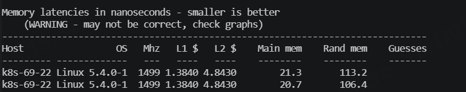
本地测试执行 lat_mem_rd，将整数数组中每第 4 个元素的值累加起来；测试的是读数据到 processor 的带宽。
- L1： 缓存1
- L2： 缓存2
- Main Mem： 连续内存
- Rand Mem： 内存随机访问延时
- Guesses:
假如L1和L2近似，会显示“No L1 cache?”
假如L2和Main Mem近似，会显示“No L2 cache?”